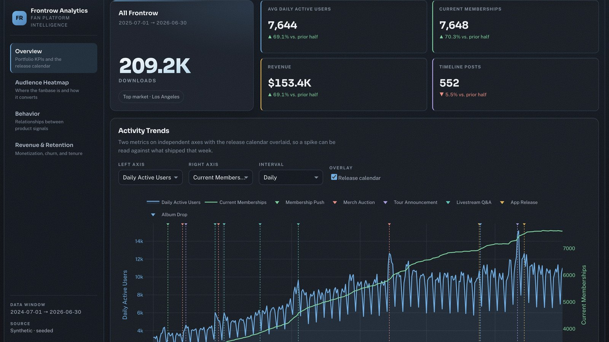

Executive KPI Monitoring Across Client App Ecosystems
Built recurring product and business KPI monitoring across DAU, memberships, revenue, notifications, auctions, livestreams, and timeline activity.
- Multi-metric time-series dashboard with event overlays.
- Supports weekly product and leadership review.
- Helps diagnose trend shifts and intervention effects.
Operating dashboard used to monitor business and product movement across a multi-client app portfolio.
View Case Study